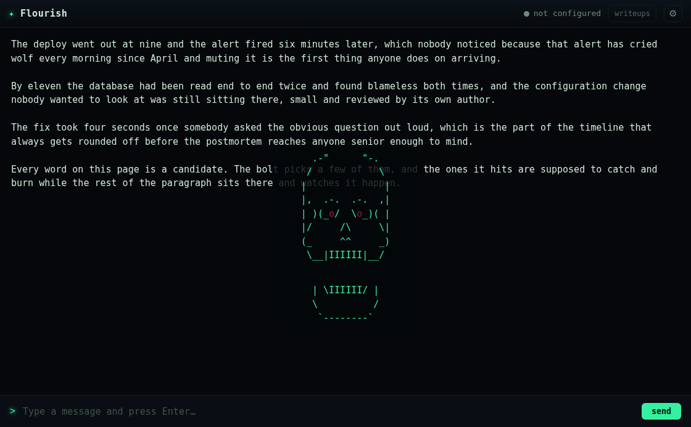
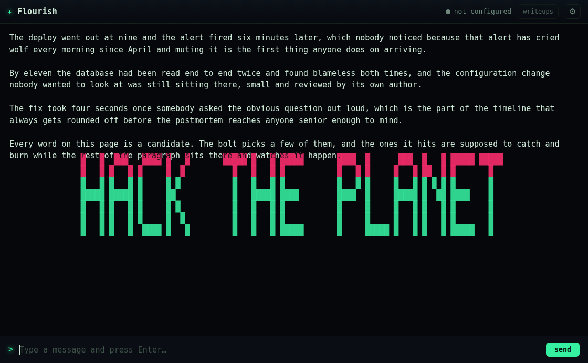
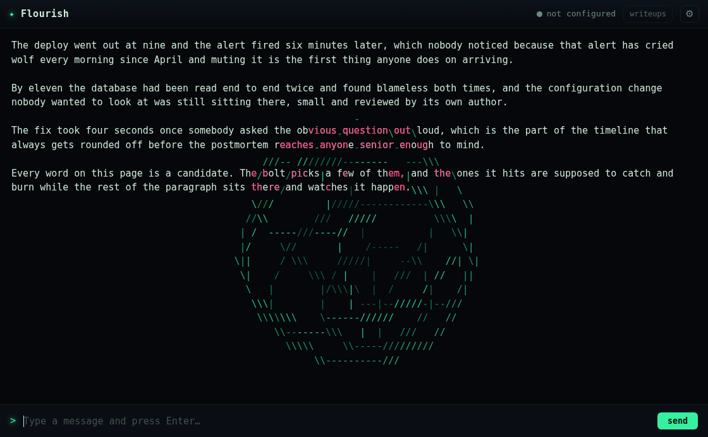
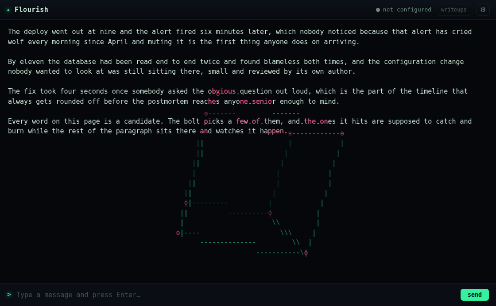
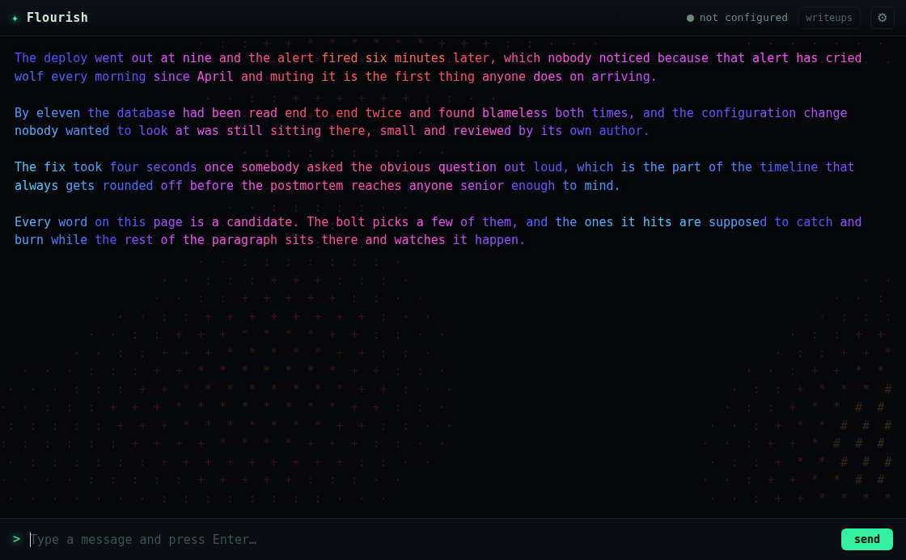
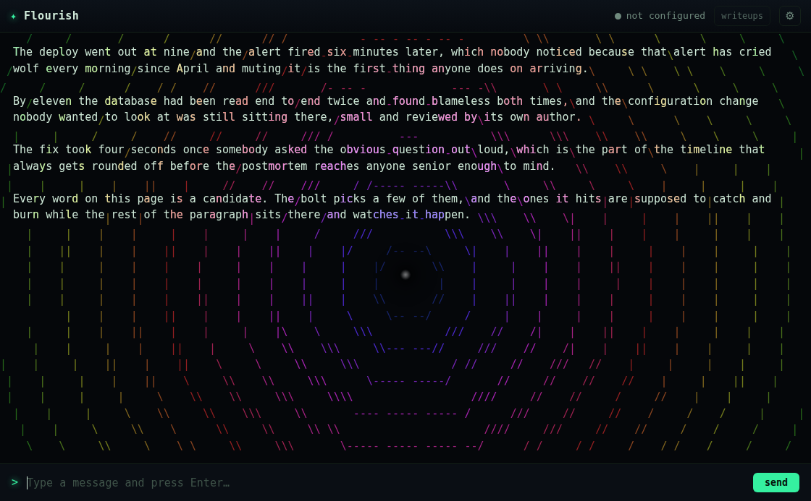
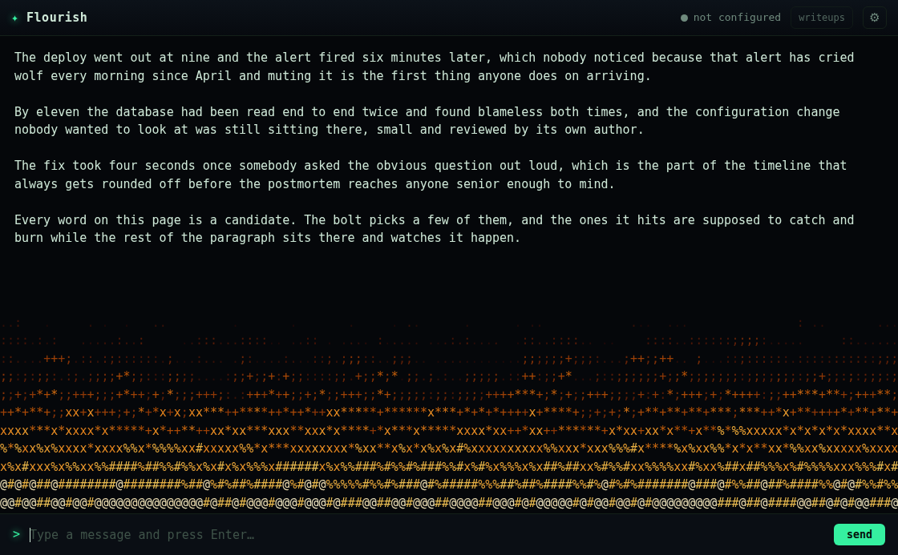
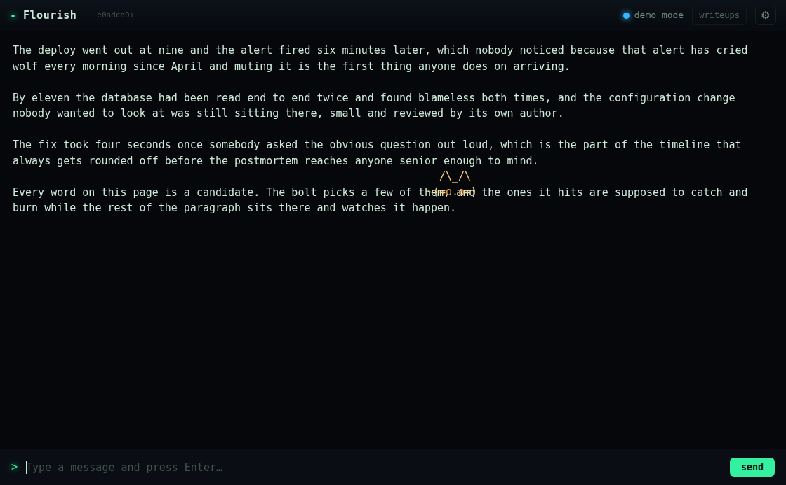

"with the ascii art, it shouldn't be line art just floating in the window. it should be ascii art on the screen, incorporating the characters on the screen. The skull should animate, it's jaw should move. there should be like a spinning wireframe sphere / prism. also should make an effect where a small cat pops out of the text and can walk along the lines of adjacent text, even falling to lower lines of text. id like more effects that have a lot of colors and shaped and such but that they try to emulate using the character grid in the console."
Four asks, one architectural answer: the terminal's text has a character grid, and effects should live IN it — same font, same cells, same rows as the prose — and be built out of the characters already on screen, not painted over them at some unrelated size.
The division of labour stays where every prior effect put it: the renderer owns the text, so the
renderer measures; the engine gets numbers. Two new measurement functions in
renderer.js:
gridSnapshot() — walks the visible transcript in runs (maximal non-space
slices of a text node): one Range rect per run, a few hundred reads for a full screen, the same order
lightning already pays. Monospace means every character inside a run sits at
left + k·cellW exactly. Returns cell metrics (advance width measured off
the longest runs, median not mean), the font, and a map from grid cell → the real character there
with its true measured position — because the 10px paragraph margins mean the uniform grid
and the actual rows drift apart down the page, and painting a "replaced" glyph 3px off its DOM twin
reads as ghosting.linePlatforms() — the same runs, merged per row into ledge segments. Gaps wider
than a couple of cells split a row: the end of a paragraph is a real edge to fall off. This is the cat's
level geometry.Both are exposed on window.Flourish for the harnesses, for exactly the reason
strikeTargets is: a harness that fires these bare is photographing a branch no reader
ever reaches.
Three rules the whole register obeys:
Scenes that ride on text also ride with it: each carries scrollDrift and
translates by the scroll delta per frame, the same aliasing salvage pays for.
| effect | what it is | incorporation |
|---|---|---|
skull (rebuilt) | on the grid at text scale, rezzes scattered, jaw CHOMPS on a pure choreography (jawDropAt), sparks on the clack, eyes pulse | each cell rezzes as the real character under it, lit, before locking into the art |
banner (rebuilt) | ink cells become solid blocks exactly one character × one line | real characters are knocked out of the blocks in page-black — the prose shows through the letterforms |
wireframe | sphere / prism / cube ({{fx:wireframe prism}}), midpoint-free true 3D: tumble, pinhole projection, rasterised into cells with slope glyphs - \ | / | an edge crossing a real character lights that character instead |
plasma | three drifting sine fields; the transcript is the raster | every word repainted in place in the field's colour over a knockout; faint ramp glyphs give the field body in the margins |
tunnel | concentric rings of tangent glyphs rushing out from the caret, hue cycling with radius | rings recolour the words they pass through |
firewall | the doom-fire automaton (stepFirewall, pure, on a fixed 40ms clock so refresh rate doesn't change the physics), glyph ramp .:;+*x%#@, ember gradient, pinned to the viewport bottom | prose standing in the fire is painted as itself gone hot — fuel, not casualty |
cat | two-row glyph sprite with a platformer brain: pops out of a line, walks, sits, blinks, falls off paragraph edges, lands with a squash, re-measures its platforms as the transcript grows | it platforms on the measured geometry of what you wrote |
The seven older panes (wardial, sniffer, trace, daemon, portscan, overflow — not crack or gibson, which are deliberately cinematic) take the snapshot as an upgrade: with it they snap to the text's rows and columns and print in the page's own face, like terminal output instead of a floating window. Bare, they keep their old path.

skull at 1550ms — on the grid, veiled, jaw caught mid-chomp (the gap between the teeth rows).
banner — block mosaic on the grid; where it crosses the prose line, the characters are punched out of the blocks.
wireframe sphere — slope-glyph rings; the words "obvious question out", "bolt picks" lit where edges cross them.
wireframe cube — corners as o, prose catching the strokes.
plasma — the prose IS the raster; ramp dots carry the field through the margins.
tunnel — tangent-glyph rings, hue by radius, words recoloured in the wavefronts.
firewall at 1800ms — the automaton fully climbed: source white-hot, tips flickering out as : and .
cat — ears over the paragraph gap, face walking across "them, and". Platforms are the measured lines.The pattern from the ASCII-scenes build, kept on purpose: plan pure, probe the paint, then look anyway.
ascii-probe, extended to fire the way applyEvents fires: real
prose, real snapshot, and it throws if the grid comes back thin. New oracles per scene: plasma's
canvas strings must BE the transcript's own words; a wireframe frame must hold two distinct stroke
glyphs (one glyph = a rotation degenerated to a line); the cat must move across a 4s window.
Verdict: 15/15 planned, painted, on-screen, faithful, reaped
(full output).fx-shots: eleven new frames over real prose, then actually read as images
— the step that has caught what counts cannot (gibson's smear). This time looking caught nothing
the probe missed; the probe caught what looking missed (below).npm run smoke:web against the running server: green.fillText and
strokeRect; the grid banner is fillRect blocks plus knockout glyphs, so a
correct banner probed as painted 0. The tap now counts fills, per frame.
Same lesson as the 126px font regex: when a working feature fails the harness, suspect the harness
first.sitP tuned 0.0004→0.00018: a cat with somewhere to be.fx-shots cat frame came back catless with a smeared
compositor band; three independent reproductions (state trace, draw-call tap, fresh screenshot) showed
the cat present and painting. xvfb software-GL capturePage can catch a frame mid-composite;
noted here so the next blank single frame gets re-shot before it gets "fixed".parseArgs grew a words pass-through so wireframe can
hear sphere · prism · cube without every effect growing its own parser. Unknown words cost
nothing.fillText per chunk keeps a full screen of prose near gibson's measured frame budget, and
colour resolution at 7 characters is invisible at plasma's spatial frequencies.rh, median), not
from the font size — that's what makes a canvas glyph land exactly on its DOM twin, and it is why
the plasma shot shows no doubling.wireframe maps scale to radius; the others ignore it.